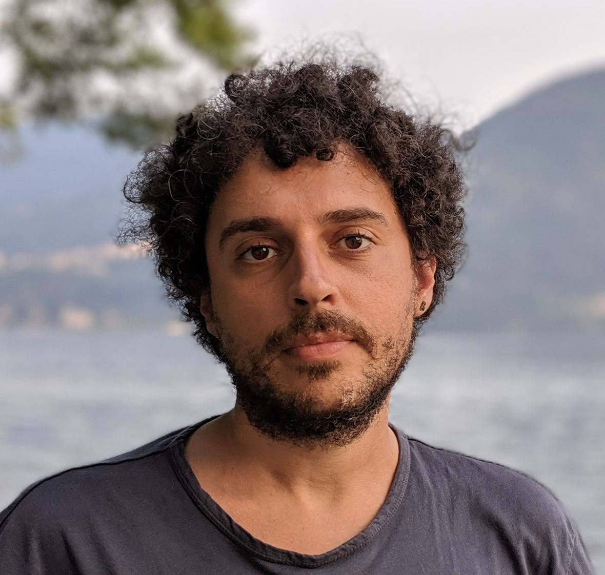

Assistant Professor, Computer Science — VU Amsterdam
(part-time) — TU Eindhoven
NU building 11A-43, De Boelelaan 1111, 1081 HV Amsterdam
d.bonetta@vu.nl · Scholar · DBLP · GitHub · LinkedIn
I work at the intersection of programming languages and systems. My group studies managed language runtimes — the virtual machines and compilers underneath Java, JavaScript and WebAssembly — and how they meet modern data systems. The recurring question is where the performance goes, and how much of it we can get back by changing the runtime rather than the application.
Before joining the VU I was a Principal Researcher in the Virtual Machine Research Group at Oracle Labs and a member of the GraalVM team, where I also served on ECMA TC39. I hold a Ph.D. from USI Lugano. At the VU I am part of the Computer Systems group and the At Large team.
Recent news
- OOPSLA 2025HeapBuffers: Why Not Just Using a Binary Serialization Format for Your Managed Memory? appeared in PACMPL, with Júnior Löff, Matteo Basso and Walter Binder. DOI
- VLDB 2025GpJSON: High-performance JSON Data Processing on GPUs appeared in PVLDB 18(9). DOI
- CF 2025Multi-GPU Greedy Scheduling Through a Polyglot Runtime, on scheduling GPU work from a language runtime. DOI
- IPDPSW 2025Memory Efficient WebAssembly Containers, with Matthijs Jansen, Maciej Kozub and Alexandru Iosup. DOI
- ICPE 2025Investigating Performance Overhead of Distributed Tracing in Microservices and Serverless Systems. DOI
- ICPE 2025Co-chaired the HotCloudPerf'25 workshop on hot topics in cloud performance.
Ongoing work
Accelerators for data processing
Moving parsing, joins and aggregation onto GPUs and NPUs, and finding out which parts of a query engine actually survive the trip.
Runtimes and compilers
JIT and AOT compilation in GraalVM and WebAssembly runtimes: profile-guided inlining, stateful incremental compilation, SIMD-aware optimizations.
Data formats and memory layout
Serialization, compressed representations and managed-heap layouts — Arrow, Parquet, JSON and friends — and the cost they impose on the runtime.
Lean cloud runtimes
Startup latency, memory footprint and energy use of Java and WebAssembly in serverless and container settings.
Teaching
- Systems Seminar M.Sc. — VU Amsterdam
- Language VMs: Design and Implementation M.Sc. — TU Eindhoven
- Advanced Systems Programming B.Sc. — VU Amsterdam
Working with me
I am always looking for students who like building things: practical tools, careful experimental evaluations, real contributions to open-source projects.
Prospective Ph.D. students — send me an email with your CV, your research interests, and why you think there is a good match with our ongoing work.
VU and TU/e students — I regularly offer B.Sc. and M.Sc. theses, literature studies and research projects. Have a look at the open topics and send me an email to arrange a chat.
Contact
d.bonetta@vu.nl (VU)
d.bonetta@tue.nl (TU/e)
Office
VU Amsterdam, Faculty of Science
NU building, 11A-43
De Boelelaan 1111, 1081 HV Amsterdam